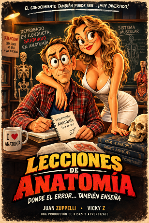

Pósters Cinematográficos Cartoon IA

🎬
Transforma cualquier fotografía en un personaje de animación clásica y reconstruye la escena como un póster de película teatral.
¿Qué es el Slapstick? El slapstick (también conocido como comedia física o humor de «golpe y porrazo») es un subgénero de la comedia que se basa en acciones exageradas de violencia física, caídas y golpes que no causan un dolor real ni consecuencias graves en los personajes.
📖 Mini Manual de Usuario: CINE SLAPSTICK 4K
¿Qué hace este prompt? CINE SLAPSTICK 4K transforma una fotografía de referencia en un póster cinematográfico profesional, manteniendo la identidad visual del sujeto y convirtiéndolo en un personaje de caricatura slapstick exagerada.
Etapa 1
Transformación del personaje
- Conserva rostro, edad, cabello, ropa, accesorios y características reconocibles.
- Convierte al sujeto en una caricatura de animación exagerada.
- Utiliza ojos expresivos, manos y zapatos ampliados, extremidades elásticas, contornos de tinta y estética squash & stretch.
- Evita que parezca simplemente una fotografía con un filtro cartoon.
Etapa 2
Creación del póster
- Reconstruye el escenario como un ambiente cinematográfico de animación.
- Añade iluminación dramática, profundidad atmosférica, textura de papel envejecido y viñeteado.
- Organiza automáticamente la imagen como un one-sheet de película.
- Genera título, tagline y créditos ficticios coherentes con la imagen.
🎭 ¿Qué hace con personajes famosos?
El prompt analiza si el sujeto es una figura pública claramente asociada a un personaje cinematográfico o televisivo reconocible:
Si hay asociación clara
Crea una parodia inspirada en esa película/serie, género y ambiente.
Si no hay asociación clara
Inventa una película completamente original, adaptada a la apariencia y situación del sujeto.
🎞️ Estructura automática del póster
PARTE SUPERIOR: Pequeña línea de presentación
CENTRO: Personaje caricaturizado como protagonista absoluto
TERCIO INFERIOR: TÍTULO DE LA PELÍCULA
Debajo: Tagline humorístico
PARTE INFERIOR: Línea de créditos ficticios (billing line)
🚫 ¿Qué evita?
El prompt incluye controles estrictos para evitar:
- ❌ Cambios de identidad
- ❌ Alteraciones del rostro
- ❌ Manos o dedos deformes
- ❌ Personajes duplicados
- ❌ Reposición innecesaria
- ❌ Aspecto de "foto + filtro"
- ❌ Logos de estudios
- ❌ Marcas de agua
- ❌ Caricaturas ya existentes
- ❌ Títulos copiados
- ❌ Exceso de texto
💡 ¿Cómo utilizarlo?
1
Carga una fotografía clara del personaje.
2
Ejecuta el prompt sin necesidad de describir nuevamente su rostro, ropa o pose.
3
El sistema utiliza la fotografía como referencia principal y exclusiva de identidad.
4
La IA decide automáticamente si corresponde una parodia cinematográfica o una película original.
5
Obtienes un póster cinematográfico cartoon completo, no simplemente una caricatura común.
⭐ En una frase
«De una fotografía real a un protagonista de película animada, con identidad preservada, humor slapstick y acabado de póster cinematográfico.»
¿Qué es?
Diseña un cartel cinematográfico de estreno animado estilo 3D Pixar/Disney donde la persona de la fotografía asume el rol del héroe principal con render de iluminación global deslumbrante.
¿Cómo usarlo?
- Abre Google Flow y configura Nano Banana 2 en orientación vertical (9:16).
- En la sección Ingredients, añade la foto del protagonista (+ Add Image).
- Etiqueta la foto como
Personaje 1para esculpir el personaje animado conservando su parecido real. - Pega el prompt de cartel cinematográfico y genera el afiche de estreno mundial.
Cómo personalizar / Parámetros:
Modifica el título de la película ficticia, créditos y género de la aventura animada en el texto del prompt.
Prompt para copiar
Use the uploaded image as the sole identity, wardrobe, pose, camera, framing, crop, and composition reference. Preserve the subject’s exact recognizable face, age, skin tone, hairstyle or headwear, expression, clothing silhouette, jewellery, hands, body position, objects, camera angle, crop, and canvas placement. Do not rotate, mirror, re-pose, replace the person, make them generic, alter ethnicity, add limbs, duplicate hands, change finger count, or create malformed anatomy. First transform the subject into an unmistakably exaggerated original golden-age slapstick cartoon character—not a realistic person with a cartoon filter. Use an oversized expressive head, enormous oval or heavy-lidded cartoon eyes appropriate to the subject, bold brows, a stylized nose, exaggerated mouth and jaw, broad graphic facial planes, elastic rubber-hose limbs, comically enlarged hands or shoes where appropriate, thick uneven black ink contours, flat rich cel shading, squash-and-stretch energy, motion lines, and lively hand-drawn animation texture. Keep the subject immediately recognizable. Then rebuild the image as a polished, premium theatrical movie one-sheet—not a simple illustration or comic page. Preserve the most suitable original setting, but convert it into a cinematic cartoon environment with dramatic lighting, atmospheric depth, simplified background shapes, aged-paper print texture, vignette, and a disciplined professional poster layout. Automatically determine whether the subject is a well-known public figure strongly associated with a recognizable film or television role: if so, create a playful parody poster inspired by that appropriate title, genre, setting, wardrobe, and cinematic mood; if the subject is unknown or not clearly linked to a role, invent an original movie title, genre, setting, tagline, and poster concept that naturally fit their visible appearance, pose, clothing, and environment. Make the subject dominant and central. Use clear hierarchy: a small feature line at the top, a large readable cinematic title across the lower third, one witty tagline below, and a neat fictional billing line at the bottom. All poster text must be legible, correctly spelled, and limited to the selected title, tagline, and billing. Use original classic slapstick-animation energy only—no existing cartoon characters, studio logos, title-card designs, or watermarks. Keep any action harmless and comedic; replace weapons with safe cartoon props when needed. The final image must look like a real theatrical poster: bold, cinematic, funny, richly illustrated, and unmistakably exaggerated.